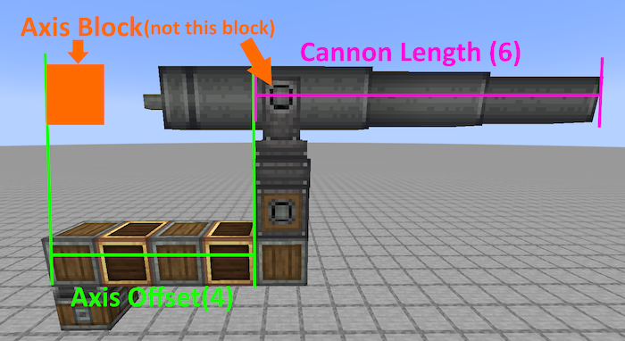
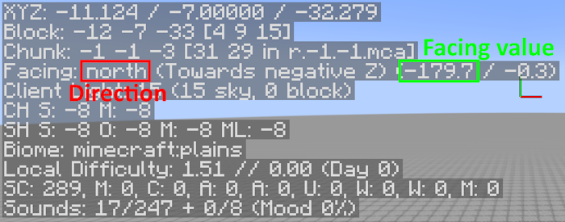

Cannon Coordinate is coordinate of axis block.
Axis block is a cannon block above the yaw axis, not pitch axis.
Cannon Length is length of cannon.
(Axis block included, so this value should be more than 1.)
Axis offset is the distance of yaw axis and pitch axis.
(Yaw Axis excluded, so if yaw axis is under the pitch axis, it should be 0. In this case, the axis block is the pitch axis.)
This value would be useful when you are using Create:Interactive.
Target Coordinate is coordinate of the target block.
It is a good idea to increase or decrease Y if your shell didn't hit the target.
This is example of values↓
Cannon Direction is direction of the cannon. You can check the direction in F3 screen.
Facing option needs Yaw Offset to work properly.
Yaw Offset represents cannon's actual direction.
A positive value means right, a negative value means left. The value range is -180 to 180.
(E.g. "North -30" means the cannon facing 30° to the left from the north.)
Also, if you select Facing in Cannon Direction, you will be able to input facing value from F3 screen.
Cannon Type is option to limit Pitch range.
Normal: -30° to 60° / Upside Down: -90° to 15° / No limit: -90° to 90°
Muzzle Velocity has two option. m/s or Powder Charge.